免拆芯片提取固件在汽车中的应用
免拆芯片提取固件在汽车中的应用
近期发表我在安全客上的文章 免拆芯片提取固件 讲了如何在不拆芯片的情况下提取固件，其中也涉及汽车部分，但只是一笔带过。现在受青骥 邀写一篇关于汽车上的固件提取的文章。
智能汽车是一个大的 IOT 设备合集，每一个电子系统都使用了大量的电子元件，通用车载电子系统如下图。
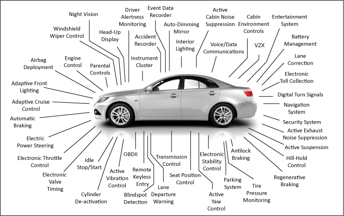
智能汽车不仅包含 IVI、TBOX 还包含数十个 ECU。不同模块的侧重点不同，使用的芯片也存在着较大的差异。IVI 由于需要提供信息服务能力与人机交互能力，往往需要较强的性能，所用到的芯片也较多；TBOX 没有 IVI 功能那么复杂，主要承担与服务端的通信任务，主要芯片为通信模组；虽然单个 ECU 功能因功能不同存在较大的差异，但也多采用 MCU。
下面会介绍一些知识，然后分别演示如何从汽车中的外置Flash 和 MCU 中免拆提取固件。
基础知识
芯片封装与针脚定义
使用芯片夹可以实现 SOP、QFP 封装等针脚外露的芯片免拆固件提取，而对 QFN、BGA 等封装方式则无能无力。
SOP8/16
SOP(Small Out-Line Package,小外形封装) 针脚从封装两侧引出呈海鸥翼状(L 字形)，一般用于针脚不太多的芯片上 。SOP8/16 封装的 Flash 在路由器、摄像头等 IOT 设备厂较为常见。针脚有8根或16根，且一个角上有小圆点（每个芯片都有一个小圆点，小圆点所在的位置是第一针脚,然后逆时针排布第二针脚,第三针脚等）,型号代码一般是24或25开头。SOP8/16 SPI Flash 一般的针脚定义如下。

| 引脚 | 定义 |
|---|---|
| /CS | 片选 |
| DO | 数据输出 |
| /WP | 写保护 |
| GND | 电源地 |
| VCC | 电源正极 |
| /HOLD | 输入保持 |
| /RESET | 复位 |
| CLK | 时钟 |
| DI | 数据输入 |
下图中某车机中的 Flash 就采用了 SOP16 封装。
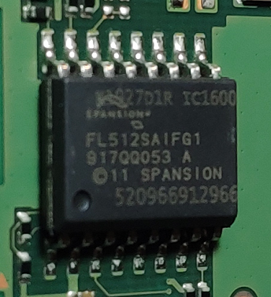
QFP
QFP(Plastic Quad Flat Package，方型扁平式封装技术）针脚从四个侧面引出呈海鸥翼(L)型。实现的芯片针脚之间距离很小，管脚很细，一般大规模或超大规模集成电路采用这种封装形式，其针脚数一般都在64以上。在小型IOT设备中可作为主控或协处理器。下图中某车机的收音机芯片就采用了 QFP 封装。
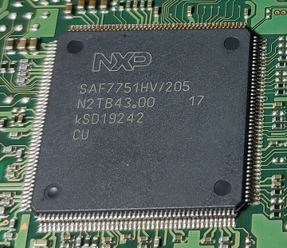
此类封装由于针脚数不固定，没有统一标准，一般由厂商自行定义，引脚定义详见芯片手册。
GBA
BGA(Ball Grid Array Package,球栅阵列封装) 封装的 I/O 端子以圆形或柱状焊点按阵列形式分布在封装下面，具有更小的体积，更好的散热性能和电性能。由于 I/O 端子在封装下方，提取固件则需要使用
BGA返修台拆卸下来读取，不能实现免拆提取。BGA 封装一般用于 CPU 和大容量存储。下图是某车机中采用 BGA 封装的 Flash。

此类封装同 QFP 封装的芯片一样，引脚定义需看看相应的芯片手册。
芯片夹
一般使用的夹子有三种。第一种是SOP8/16脚测夹，常用于 SPI 闪存的固件提取；第二种是芯片通用测试夹测试钩子,常用于SOP QFP 封装芯片的固件提取或协议分析；第三种和第四种是ECU 探针，多用于汽车 ECU 固件提取。
SOP8/16脚测夹

SOP8/16脚测夹适用于 SOP8 以及 SOP16 封装的芯片。芯片通用测试夹测试钩子
芯片通用测试夹测试钩子此类钩子淘宝上有好几种在售。下图的这种，只适用于芯片针脚较少的芯片，如采用 SOP8 封装的芯片。勾式是单钩钩取，扁式是双钩夹取。这种的价格相对便宜一些。
下面这种夹子更细，能够用在有更多更细的针脚芯片上，如 QFP 封装的 MCU。这类夹子较上面的这种要贵一些。
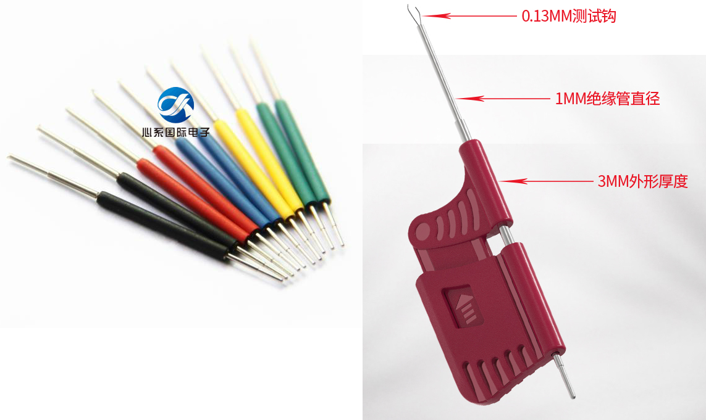
这类夹子都比较小，当需要夹连续的针脚时有一定的困难，需要反复尝试。另外由于没有支撑，可能刚夹上就被弹开了，这种情况就可以用ECU 探针来连接。
ECU 通用探针
ECU 探针常用于汽车行业，是动力调教等玩车搞车一族的必备单品。当然其他的芯片也可以用它来进行固件提取。这类由于带有支架，使用时只需要把探针搭在对应的芯片针脚上。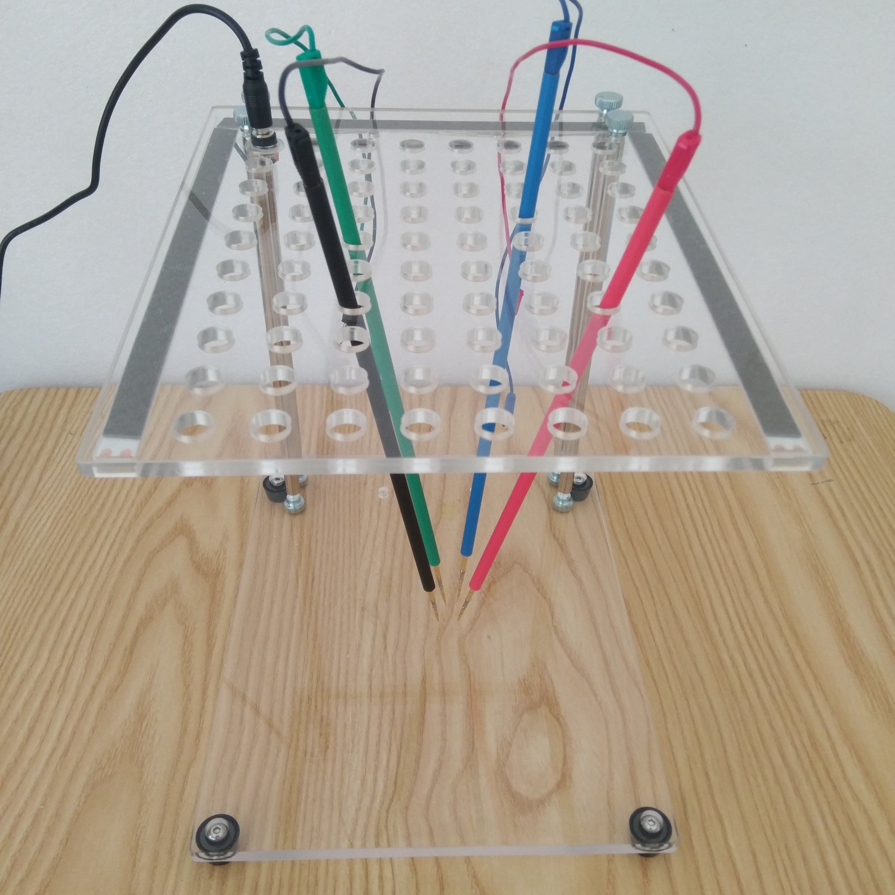
ECU 专用探针
对 ECU 进行 BDM调试时需要用到特定的适配器，将 ECU 电路板上的一些金属触点与读写设备相连。此类探针也被称之为
BDM 适配器。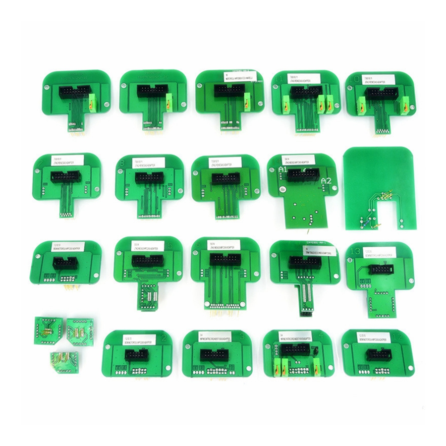
ECU 刷写工具
对发动机 ECU(Engine Control Unit,发动机控制单元) 进行读写需要用到 ECU 刷写工具。汽车动力调教领域所开发的刷写工具较为成熟，比较出名的有 HP Tuners 、PCMFlash、Alientech（KTAG & KESS）、 Autotuner 等。
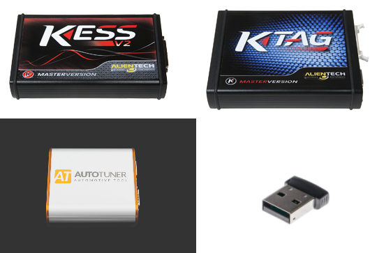
ECU 动力调教这个领域比较封闭，互联网上这方面的资料也极少。仅有的资料也集中与动力调剂，不涉及信息安全领域。
ECU 调试模式
ECU 刷写工具有 4 中工作模式，分别为 Bench、BDM/JTAG、Boot 以及 OBD 模式。
Bench：工作台模式，不需要把电脑板拆开连接boot点，直接对针插点读写。
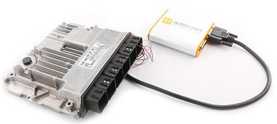
BDM/JTAG: 通过专用的针脚，把ECU电路板上的一些金属触点与读写设备连接，进行读写操作。
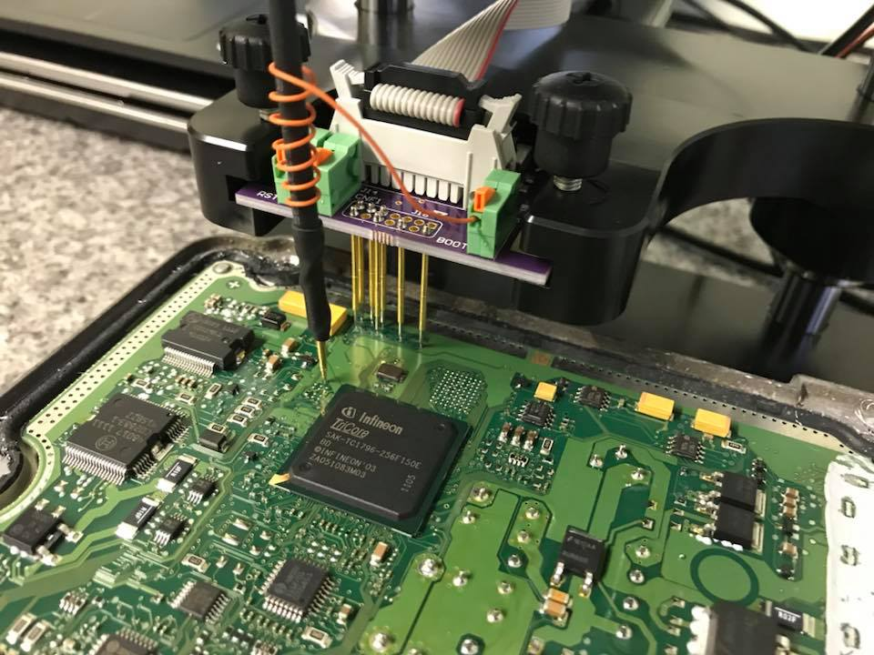
Boot：一种特殊的 BDM 方式，除了需要连接 ECU 电路板上的一些金属触点，还需要对 ECU 进行加电并连接一些电阻，同时读写 ECU 的步骤要求比 BDM 严格。
EDC17C46 Boot 模式连接图如下。
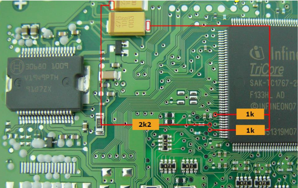
- OBD：对某些特定的 ECU 型号，首次刷写不能直接通过 OBD ，需要 Bench 和 Boot 解锁一次后，才能实现通过 OBD 进行读写操作。
从 Flash 中提取固件
免拆读取 Flash，一般读取 SOP8 封装的 SPI Flash较多，使用SOP8/16脚测夹较为方便。提取所需的软硬件如下。
软件
- flashrom: flashrom 是一个开源的跨平台的烧录工具, 提供了不少的芯片支持和编程器支持. 用于识别、 读取、写入、 验证和擦除各种 Flash 芯片。
硬件
- 测试夹：SOP16脚测夹，上文有详细介绍。
- 编程器：CH341A 编程器/树莓派/CJMCU FT232H等(任选一)
免拆芯片提取固件中使用了树莓派，在这里我用 FT232H 做演示。
安装flashrom
使用 apt 直接安装。
1
sudo apt-get intall flashrom
接线
首先找到车机上的 Flash，根据芯片丝印得知 Flash 是 Spansion 的 FL512SAIFG1，容量为 64MB。
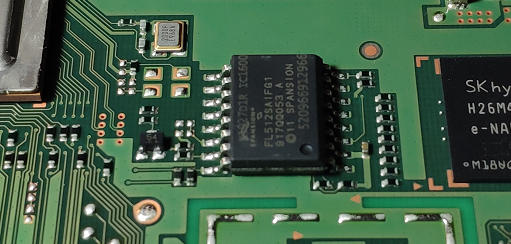
在芯片手册中找到对引脚的定义。
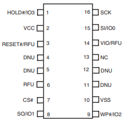
最后根据下表进行连线。
| FT232H | SPI FLASH |
|---|---|
| AD0(SCK) | SCK |
| AD1(MOSI) | MOSI |
| AD2(MISO) | MISO |
| AD3(/CS) | /CS |
| VCC 3.3V | VCC 3.3V(+/HOLD or /RESET,/WP) |
| GND | GND |
连接好的效果图如下。
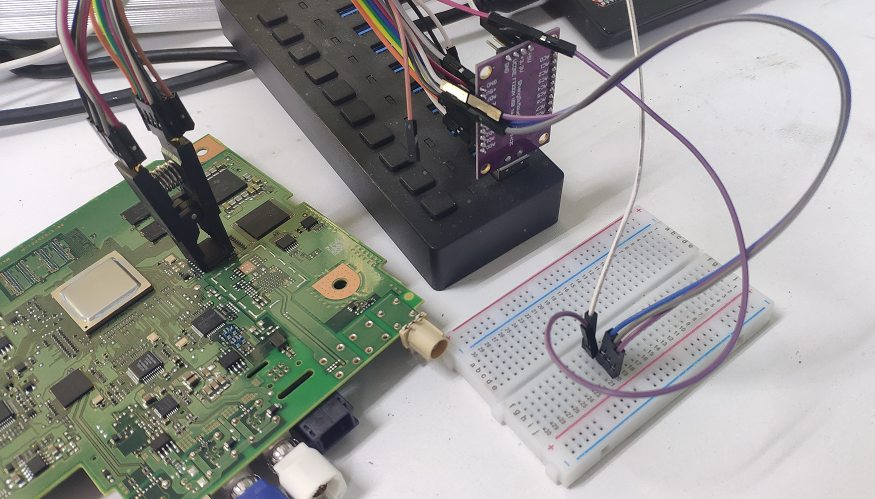
提取
接好线后，使用 flashrom 提取固件。
-p选项指定使用的设备类型，这里使用了树莓派的 spi 接口，并设定读写速度；-r选项指定读取后保存的路径；从文件中写回 flash 所用到的选项为-w。如下成功提取固件并保存到了当前目录的 spi_dump.bin 文件中了。1
2
3
4
5
6
7root@ul00:~# flashrom -p ft2232_spi:type=232H -r spi_dump.bin
flashrom v1.2 on Linux 5.3.0-kali2-amd64 (x86_64)
flashrom is free software, get the source code at https://flashrom.org
Using clock_gettime for delay loops (clk_id: 1, resolution: 1ns).
Found Spansion flash chip "S25FL512S" (65535 kB, SPI) on linux_spi.
Reading flash... done.
从 MCU 中提取固件
从 Flash 中提取固件较为常见，但有些情况下固件被没有存储在外置的 Flash 上，而是在 MCU 的内置 Flash 中。这时需要通过调试接口（SWD/JTAG等）对固件进行提取，也可以进行动态调试。
对 MCU 上固件进行提取，首先需要根据芯片手册，找到调试接口。有些情况下，调试接口可能会引出。下图是我曾经研究过的一款智能设备，板子上引出 SWD 调试接口。

但随着硬件厂商对安全的重视，MCU 调试接口被引出的情况越来越少。但遇到这种情况时，可以尝试直接操作芯片针脚。下面演示使用芯片测试夹从 MCU 中提取内置固件。提取所需的软硬件如下。
- 硬件
- 测试夹：芯片通用测试夹测试钩子。
- FT232H：多功能 USB to JTAG SWD/UART/FIFO SPI/I2C 模块。也可以使用 JLink、STLink 等调试器。
- 软件
- OpenOCD: OpenOCD（Open On-Chip Debugger)是一个开源的片上调试器，旨在提供针对嵌入式设备的调试、系统编程和边界扫描功能，可以与 GDB 配合进行动态调试。
以下以某车机为例使用测试夹通过 OpenOCD 验证调试接口 SWD 是否默认开启。
OpenOCD 安装与简单使用
使用 apt 直接安装。
1
sudo apt-get install openocd
有特殊需求时，也可以进行源码安装。部分芯片厂商对 OpenOCD 进行了适配，如新唐的 OpenOCD-Nuvoton。
OpenOCD 运行需要两个配置文件，第一个是调试器的配置文件，第二个是目标芯片的配置文件。
1
openocd -f interface/ft232h-module-swd.cfg -f target/stm32f0x.cfg
OpenOCD 运行之后，使用 telnet 连接本地的 4444 端口与芯片进行交互。连接后，输入 help 查看支持的命令，不同的芯片支持的命令有所不同。一般而言提取固件使用
dump_image命令。GDB 动态调试监听见本地的 3333 端口，进入GDB 后通过
target remote localhost:3333连接。连线
根据芯片丝印找到相应的
芯片手册。在手册中找到调试方式，此芯片采用 SWD 进行调试。找到芯片上的 SWDIO、SWCLK、VSS、RESET 四个引脚。 然后，按下图连接 FT232H。注意 AD2(DO) 需要串联一个电阻，然后与 AD1(DI) 合并组成 SWDIO。
最后将 FT232H 通过 USB 接口连接电脑，连接好的图如下。
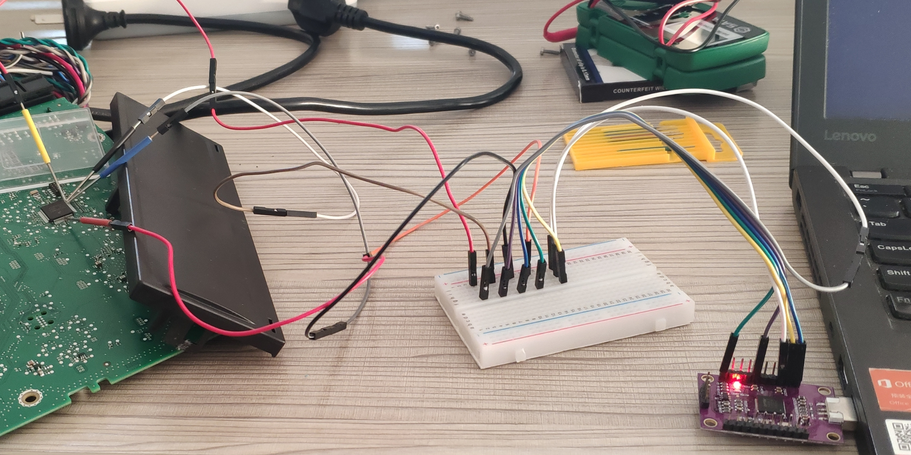
OpenOCD 连接，验证 SWD 开启状态
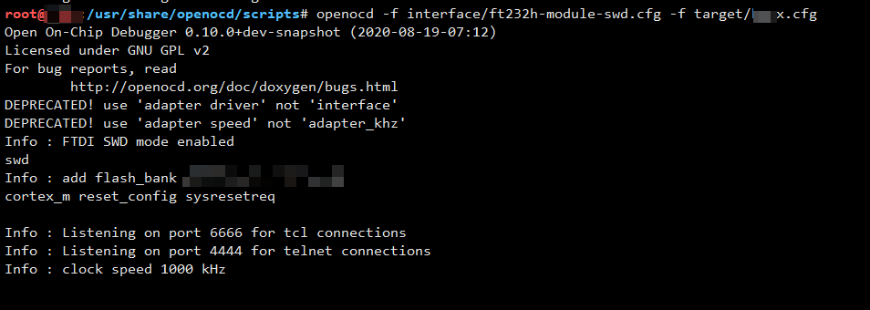
OpenOCD 连接失败，芯片开启了CRP保护。测试通过，车机 SWD 出厂时默认关闭。
如果想了解成功提取的案例见博客 免拆芯片提取固件。
使用 ECU 刷写工具 提取固件
Alientech 的 KTAG 和 KESS 业界最为知名，广泛用于汽车动力调教领域。我们搞信息安全的，正好借鉴参考一下先进经验。
KESS
KESS 一款OBD 免拆电脑 ECU 升级设备。
KTAG
KTAG是一款需要拆电脑板读写程序的 ECU 升级设备。
KESS 与 KTAG 有时可以配套使用，KESS ODB模式需要 KTAG 通过MDB/BOOT 模式解锁，解锁之后 KESS 就能通过 ODB 读写了。
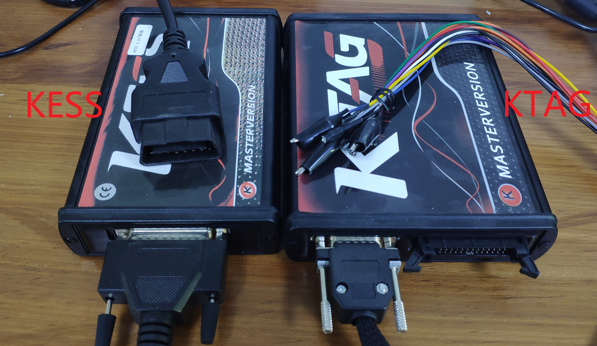
以下展示如何使用 KTAG 解锁和固件读取，主要介绍 ECU、KTAG 以及电脑直接的连接方法。YouTube 上也有不少视频，但这些视频极少介绍物理连接部分，现在写出来让新入行者少走点弯路。此次读取的 ECU 来自奥迪 S5，ECU 的型号为 Simos 8.10。此 ECU 支持 BDM模式以及 ODB模式，首次不能使用 KESS 通过 ODB 读写，需要用 KTAG 解锁后才能使用。
确定 ECU 型号
很多 ECU 外壳标签上都有标注型号，常见的有 Siemens Simos 8.x 、Bosch MED 17.x、Bosch ME 7.x.x 等。下图中 ECU 标签就标注了型号 Simos 8.10。
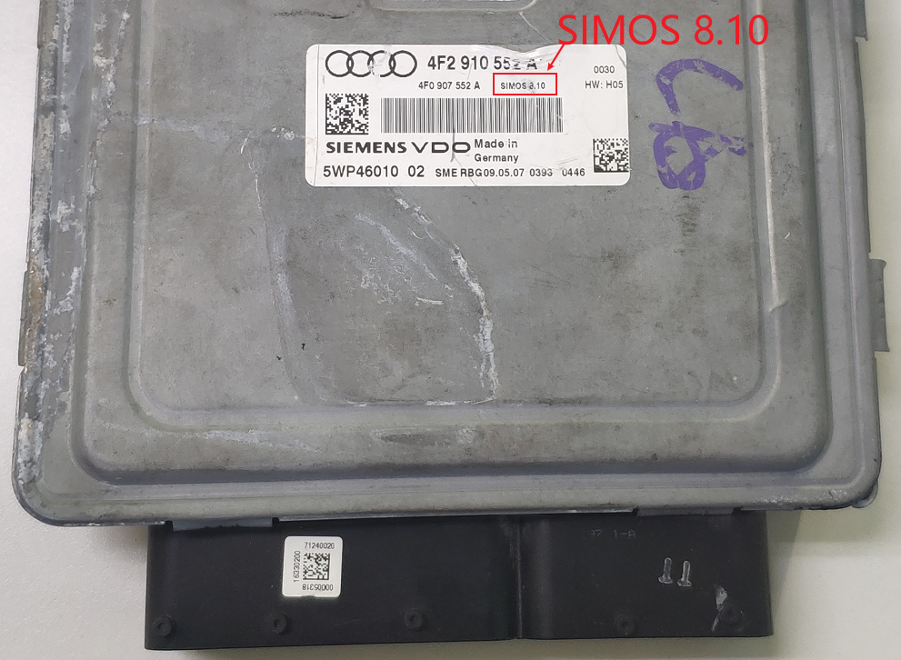
拆开ECU
不得不说 ECU 还蛮难拆，防水胶黏性特别强，建议使用热风枪加热拆除。
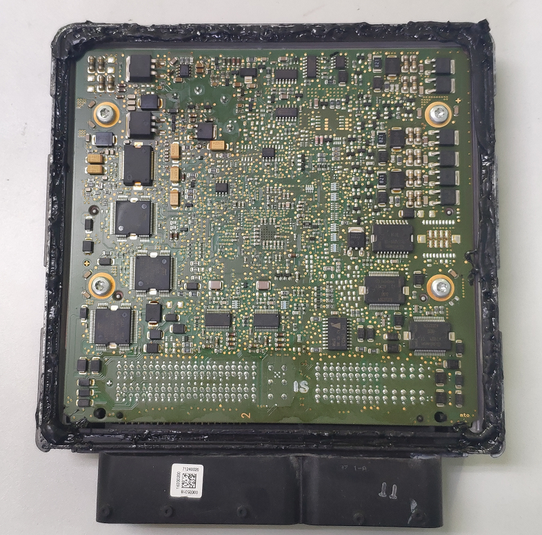
接线
幸好有资料(Ksuite帮助文档)，不然这谁知道 BOOT 和 CNF 怎么连接的。
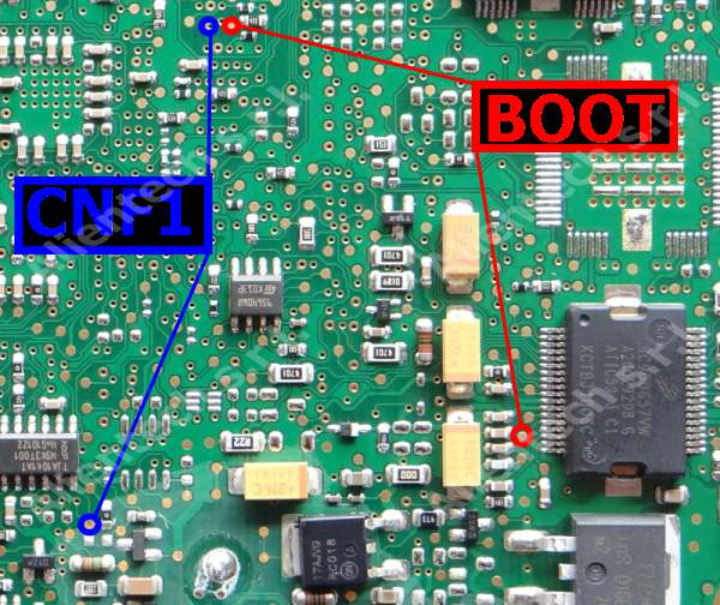
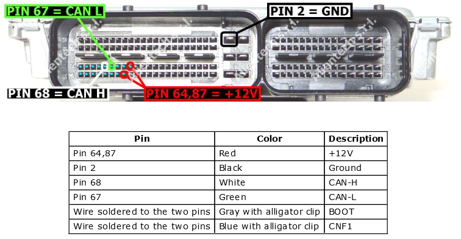
上表中 pin 需要与 14P600KT02 线束相连，上表中 color 表示的是14P600KT02 线束中的单根线的颜色，按照上表进行连接 。然后，将 14P600KT02与 KTAG 相连，最后使用 USB-B 连接 KTAG 和电脑
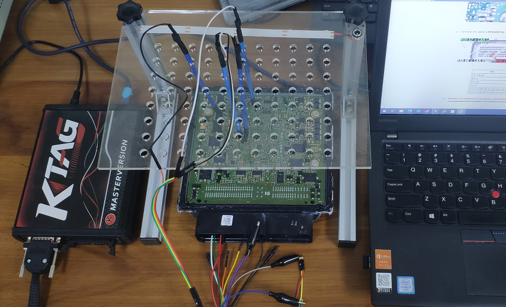
读取
打开配套软件 Ksuite，首选选择汽车品牌
Audi，然后选择车型S5。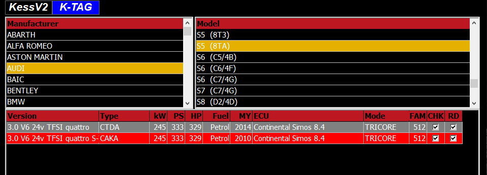
然后，选择
Reading中的Backup中所需导出的对象，最后点击Read即可。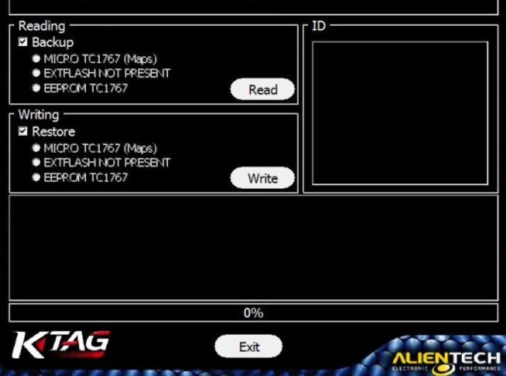
以上是我花了不少时间摸索出来的，若有错误的地方欢迎指正。如果您是这方面的专家或对汽车安全感兴趣欢迎与我交流。
参考
- 40种芯片封装类型介绍（含实图）
- openocd
- Automotive Electronic Systems
- Alientech
- VCP EDC17 BootMode Tools
- BSL100 - programable ECUs
- 刷汽车ecu的工具都有哪些？
本文首发于汽车信息安全